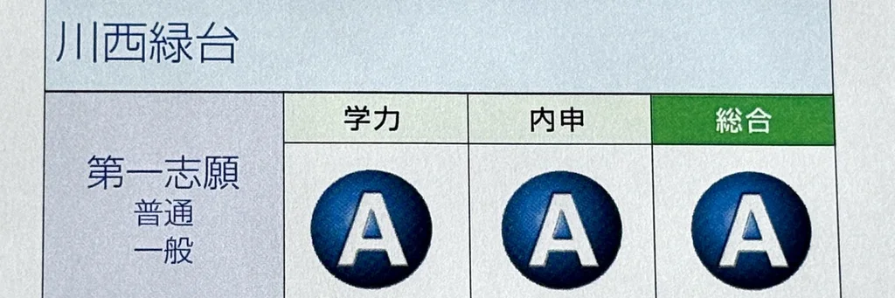
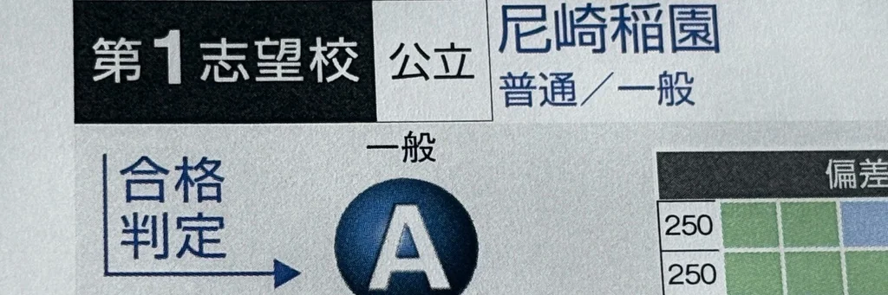
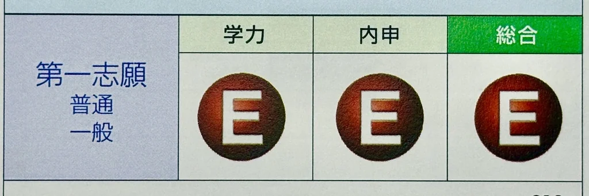

個別進学塾 ipsim (イプシム)
川西市・猪名川町の「東谷中学」「猪名川中学」専門塾

結果にこわだる進化した個別指導
対象を「１中学」に限定することで、学校の授業の進捗状況やテストの出題傾向を正確に把握。
その上で、一人ひとりの理解度に合わせた質の高いテスト対策授業を行います。


的を絞った
"効率の良い"
問題演習と
”できる”ための
徹底解説
結果にこだわるipsimの
成績アップ!!
実例
本当のチカラを発揮させる
それが
個別進学塾
ipsim
支え続けることで伸びるチカラ
支えと継続が実を結ぶ

10ヶ月で志望校A判定
当初は憧れの川西緑台高校にはまだ遠いレベルでしたが、苦手な単元を効率よく集中的に学習。
勉強への取り組み方や学習習慣についても丁寧にアドバイスし、学ぶ姿勢から変えていきました。
その結果、初秋の模擬試験では川西緑台高校でA判定を獲得し、さらに一つ上の尼崎稲園高校でもB判定を獲得。
現在は、尼崎稲園高校A判定を目指して、着実に努力を続けています。

偏差値 46 から 75 へ
夏の模擬試験では5教科の偏差値が52。
当初は大きな目標を持っていなかったものの、もともと学習のセンスと吸収力を感じさせる生徒さんでした。
点数を伸ばすコツや家庭での過ごし方についても丁寧にアドバイスし、「一緒に上を目指そう」と約束。
その後はぐんぐんと成績を伸ばし、中学3年の初秋の模擬試験で尼崎稲園高校A判定を獲得しました。
理科の偏差値は最初46でしたが、現在の偏差値は75。得意科目になりました。
現在もさらなる得点力アップを目指して努力を続けています。

E判定からの逆転合格
夏の模擬試験では、憧れの川西緑台高校がE判定という厳しい結果でしたが、講師が勉強内容だけでなく、学習管理や生活習慣まで丁寧にサポート。
生徒自身も「今できることを少しずつ積み重ねよう」と前向きに努力を続け、入試直前まで集中して取り組むことができました。
そして迎えた入試本番、見事に憧れの高校に合格しました。
ipsimがピッタリなお子さま
4つのポイント

通知表に「３」か「４」がある
お子さま一人ひとりの目標に合わせた個別カリキュラムで、内申点の向上と確かな実力アップを図り、志望校合格を目指します。

５教科で成績を上げたい
テスト前は、追加料金なしで５教科の学習が可能です。さらに、季節講習でも低価格で５教科をしっかりと学べます。
効率的に、そしてバランスよく。ipsimで５教科の成績を一緒に伸ばしていきましょう！

勉強の仕方がわからない
ipsimでは、そうなれるように「勉強の仕方」をテスト前オリエンテーションで徹底的に指導します。
暗記のコツ、ノートのまとめ方、学習計画の立て方から進め方まで、丁寧にお伝えしますのでご安心ください。

部活や習い事が忙しい
「忙しい」というのは、「充実している」ということ。だからこそ、効率的に学ぶことで、部活も勉強も両立できます。
これまでにも、部活を最後まで頑張りきり、引退後に驚くほど学力を伸ばした生徒をたくさん見てきました。
どうすれば、どちらも全力で頑張れるのか、一緒に考えていきましょう。


無料体験・三者面談のご案内
無料体験で学び方を体感
- 演習＋プロ講師の解説
- 現状の確認と課題の整理
- つまずきの可視化・弱点診断
三者面談で方向性のご提案
- ご家庭での声かけのポイント
- 方向性のご提案（費用・通塾イメージ）
- お子さまに最適な学習計画をご提案